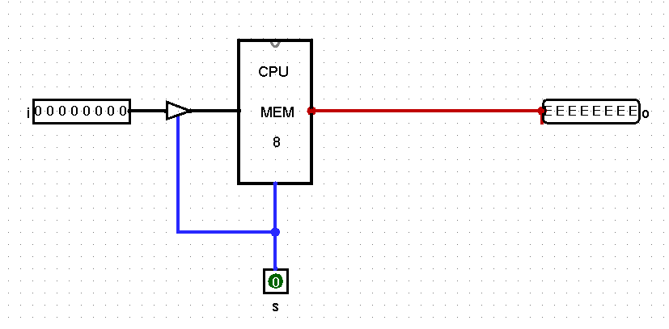
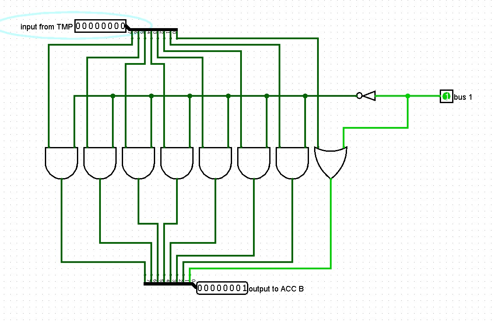
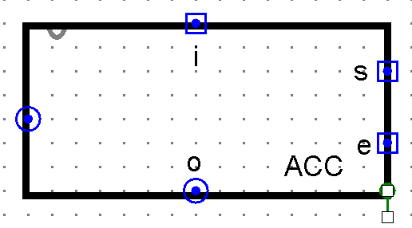
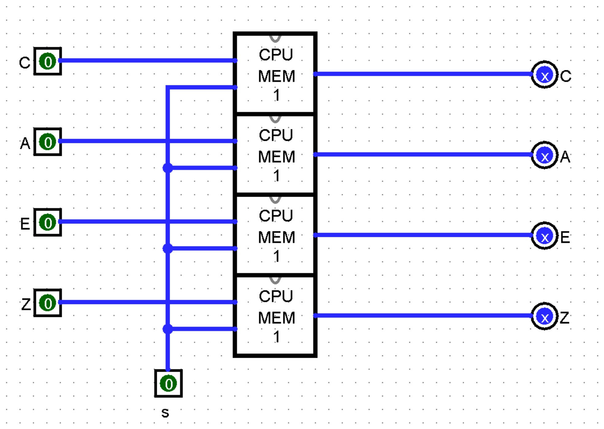

Around the ALU
Sections 10.5 – 10.8 | Estimated time: ~1.25 hours
10.5 Two inputs, one value
Page 1 left a problem. Your ALU computes A + B: it needs two bytes at its inputs at the same moment. The bus carries one byte at a time. And the result has to go somewhere — usually back into a register, which means back across the bus.
Put the ALU’s A input on the bus, and solve the other two problems with one small part each:
- The second operand waits in TMP. One transfer earlier, the register holding B drives the bus and TMP captures it. TMP’s output is wired permanently to the ALU’s
Binput, so when A arrives on the bus in the next transfer, B is already there. - The result waits in ACC, the accumulator. The ALU’s output cannot go straight onto the bus: in that transfer the bus is already driven by the register supplying A, and it is also the ALU’s own input, so its result would feed back into itself. ACC captures the result instead, and in a later transfer ACC drives the bus and the destination register captures it.
![Block diagram of the whole CPU on a black background. A blue bus runs around the outside. Along the top edge, four registers with s and e lines connect down to a large central Control Unit block. At the top left, TMP feeds a small bus1 block, which feeds the B input of a tall ALU on the left; the ALU's A input comes straight from the bus. The ALU's op1 to op3, carry-in, carry-out, larger, equal and zero lines run toward the control unit, and a clock block sits beside it. Below the ALU, ACC takes the ALU's output and connects to the bus at the bottom. On the right, the MAR sits above the RAM, both connected to the bus.](images/CPU_Overview.png)
10.6 TMP and BUS1
TMP is a MEM_8BIT from Week 5, not a full register. It never drives the bus — its output goes only to the ALU — so it needs no enable and no output buffers. It has one addition: an 8-bit controlled buffer on its input, controlled by the same s line.

MEM_8BIT and one controlled buffer, both driven by s. The output reads EEEEEEEE because this TMP has never been written — correct, as in Week 5.On paper it does nothing: while s = 0 the memory cells ignore their input anyway. In practice, Logisim Classic 2.7.1 runs the finished CPU reliably with it and unreliably without it — the same lesson as the ninth buffer in your Week 5 register. This is a description of how the simulator behaves, not a diagnosis of why. Build it; the circuit is right either way, and the tool has its own behaviour.
BUS1 sits between TMP and the ALU’s B input. It has one control line, bus1. With bus1 = 0 it passes TMP straight through. With bus1 = 1 it ignores TMP and delivers exactly 00000001. It is eight gates and an inverter: bit 0 is TMP0 OR bus1; bits 1–7 are each TMPk AND NOT bus1.

bus1 = 1: TMP holds 00000000 and the output is 00000001. The output pin is labelled “to ACC B” in this figure; it goes to the ALU’s B input. Your tab names its pins i, bus1 and o.Why build a circuit whose only trick is the number 1? Because adding 1 is the most common thing a CPU does: after every instruction, the address of the next one is the old address plus one. Put any register on the bus, raise bus1, select ADD, and ACC captures that register plus 1 — with no register anywhere holding a 1. In Week 13 this is how your CPU will step its program counter.
TMP is shown as a memory circuit with “some added circuit stuff” — the input buffer above. BUS1 is traced bit by bit: with bus1 = 1 the NOT gives 0, which clears bits 1–7 through their ANDs, and the OR sets bit 0, so the output is always 00000001; with bus1 = 0, TMP flows straight through. Your instructor’s word for it is a filter.
10.7 ACC and FLAGS
ACC is a fifth REGISTER_8BIT, wired differently from R0–R3: its i comes from the ALU’s C output, not from the bus, and its o goes to the bus. It is the only way a result gets back.
Like R0–R3, ACC gets a tab of its own that changes only the drawing: ACC_REGISTER, one REGISTER_8BIT instance wired straight through, with the appearance edited to fit where ACC sits — directly under the ALU. i goes on the top edge, so the ALU’s C drops straight into it; o on the bottom, down to the bus; s and e on the right side, toward the control section; and reg, the stored byte, on the left. The steps are the same as for CPU_REGISTER on page 1; the orientation video shows the ACC shape at 18:21.

i on top from the ALU, o on the bottom to the bus, s above e on the right, the stored byte on the left. Your tab names that side pin reg. Compare it with CPU_REGISTER on page 1: same circuit inside, drawn for a different place on the canvas.FLAGS keeps the ALU’s four status outputs. Your ALU’s CO, AL, EQ and Z are live — they change the instant the bus or TMP changes, which is one transfer later. An instruction that wants to ask “was that last result zero?” needs the answer held. FLAGS is four of your Week 4 MEM_1BIT cells sharing one s line, pulsed in the same transfer that sets ACC.
| Flag | Captured from | Means |
|---|---|---|
| C | CO | carry out of an add — unsigned overflow — or the bit shifted out of a shift. There is no signed-overflow flag. |
| A | AL | A was larger than B (unsigned) |
| E | EQ | A equalled B |
| Z | Z | the result was zero |

MEM_1BIT cells, one shared s. This figure uses the same letters on both sides; your tab names the inputs c_in a_in e_in z_in and the outputs C A E Z so the two can never be confused.Remember from Week 7 that AL and EQ come from the comparator, which compares A and B on every opcode, not only XOR. FLAGS therefore records the comparison of the two operands after any ALU operation. Nothing uses the held flags this week; in Week 14 they decide whether a jump is taken.
The four flags get their letters — carry out C, A is larger A, A equals B E, result is zero Z — each stored in its own one-bit memory, all set together, and later wired as C A E Z into the control unit.
10.8 An ALU operation is three transfers
Put the parts together and an ALU operation on two registers — call them RA and RB — takes three transfers, always in this order. This table is produced by the same model that runs the widget below, for ADD R0, R1:
| Transfer | Drives the bus | Captures | Effect |
|---|---|---|---|
| Loading the table… | |||
Read the effect column carefully, because it fixes what the instruction means: ADD R0, R1 leaves R0 unchanged and replaces R1 with R0 + R1. RB supplies B and receives the result. For NOT, SHR and SHL, which use only A, the same three transfers run — TMP is loaded and simply ignored — and RB receives the result of operating on RA. A compare stops after the second transfer: the flags are captured, and no register is written.
In Week 11 your control unit performs these three transfers automatically, as steps 4, 5 and 6 of its stepper. Steps 1 to 3 fetch the instruction. Today you are the stepper.
For accumulators and register transfers in a second voice, log into your Saylor CS301 account at the CS301 course page and open Unit 5: Designing a Processor. CS301’s MIPS datapath reads two registers at once and has no TMP or ACC; this page is the source for why yours does.
Where you are
You can run any ALU operation on two registers in three transfers and say what each part holds after each one. Next page: how “R1” becomes a wire — turning a two-bit number into the right register’s e or s.